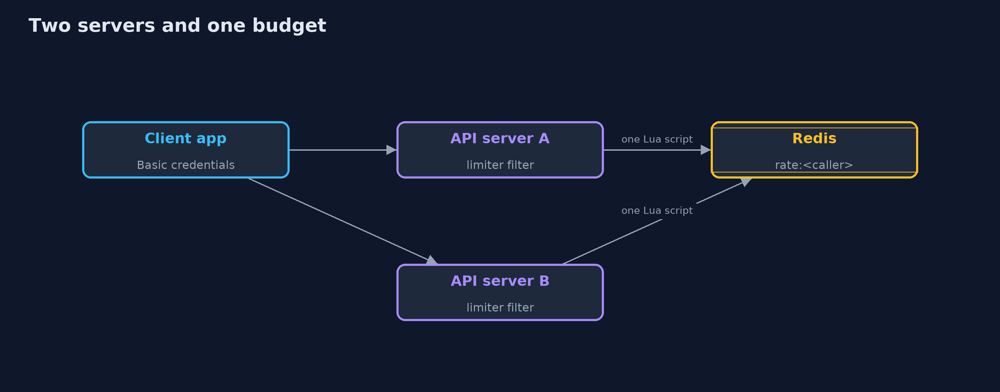
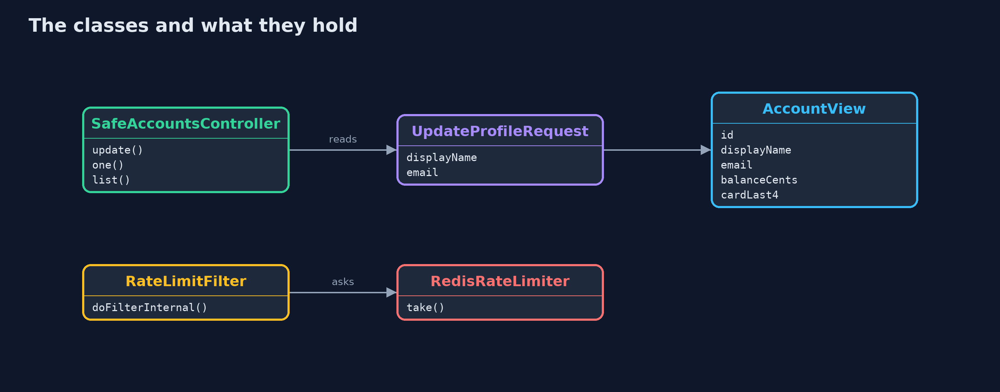
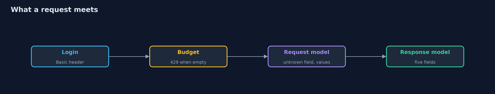
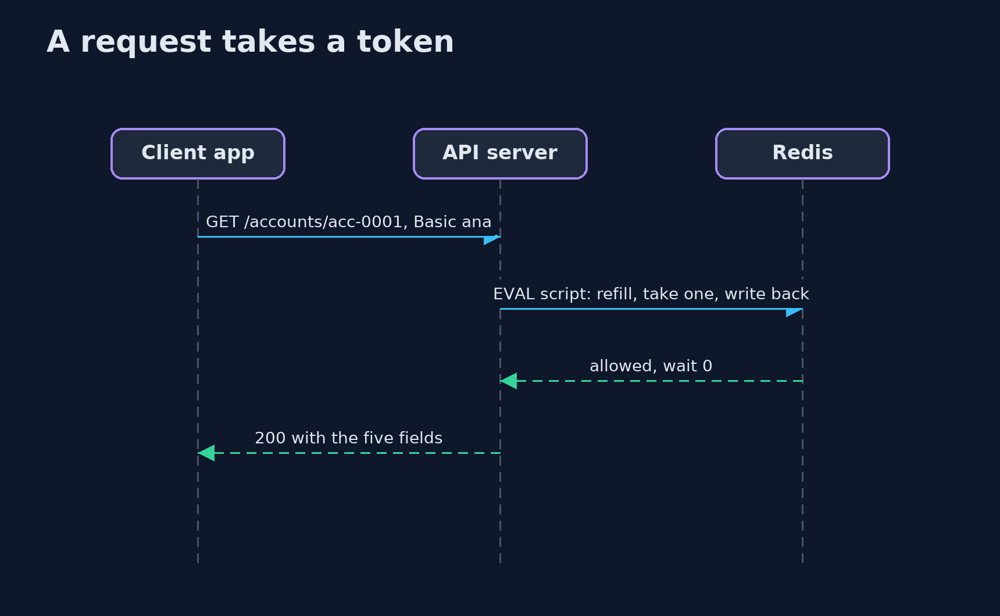

API Security with Spring Boot and Redis
src/main/java/com/jk/explore/security/apispring/
├── Account.java The bank's record of a customer, as it is stored
├── AccountView.java What a customer may see of their own account: no role, no limit, no risk score, no full card number, no PIN hash
├── ApiApp.java
├── ApiSecurity.java Callers sign in with a header, so there are no cookies to forge and no session; the budget is counted per signed-in caller
├── ApiSpringDemo.java Runs the bank API story in five numbered sections against real Spring Boot servers and a real Redis in Docker, all on the loopback interface
├── Bank.java 300 customers in memory
├── Client.java An app that calls the bank's API with a customer's credentials in a header
├── DirectoryEntry.java What the customer directory shows of anyone: an id and a name
├── ErrorHandling.java Short, fixed answers for a bad request: they say what was wrong, never what the server is
├── LocalRateLimiter.java The same bucket kept in this server's memory
├── ManualClock.java A clock that stands still until the demo moves it, so a thousand requests all happen "at the same moment" and a refill takes no time to wait for
├── NaiveAccountsController.java The first version of the API: bind the body to the stored record, return the stored record, and let the caller choose the page size
├── RateLimitFilter.java Takes one token from the signed-in caller's bucket before the request reaches the controller
├── RateLimiter.java A budget for each caller: a bucket that holds a few requests and refills steadily
├── RedisLab.java A throwaway Redis in a Docker container, bound to the loopback address on a free port, protected by a password and removed on close
├── RedisRateLimiter.java The bucket kept in Redis, so every server draws on the same one
├── Running.java One API server on a free loopback port
├── SafeAccountsController.java The second version: a request model with its limits, a response model with only what the caller may see, and a page size that has a ceiling
└── UpdateProfileRequest.java The only fields a customer may change about themselves, with their limits
A Spring Boot API owes its callers three limits: Jackson binds whatever the body names unless a request record, FAIL_ON_UNKNOWN_PROPERTIES and Bean Validation say otherwise, a controller returns whatever object it is given unless a response record says what a caller may see and a page has a ceiling, and a rate limiter that lives in one server's memory gives a caller one budget per server, so the count belongs in Redis, kept in one atomic script.
The plain api-security project builds the three limits from scratch. This one uses what a real Spring Boot bank has: Spring Boot 4.1, Jackson 3, Bean Validation, Spring Security 7, and a real Redis 8 in Docker for the budget. It needs Docker for the Redis parts; its tests are tagged integration for those: ./gradlew integrationTest.
What it shows:
- The first version. @RequestBody Account patch binds every field the caller sends, so {"role":"admin","creditLimitCents":100000000} makes Ana an admin with a huge credit limit. The controller returns the stored record with nine fields including the full card number and the PIN hash, a page size of 1,000,000 returns all 300 customers, and 1,000 requests in a loop are all answered.
- A request model. An UpdateProfileRequest record names the two fields a customer may change, with limits (@Size, @Email). spring.jackson.deserialization.fail-on-unknown-properties=true turns any other field into a 400 unknown field, and nothing is applied from a refused body.
- A response model and a ceiling. AccountView returns five fields with the card as ****0001; the directory returns id and name only; a page is capped at 50 and size=0 is refused.
- A budget in Redis. A token bucket per signed-in caller, written as one Lua script so taking a token is atomic: 50 answered, then 429 with Retry-After, a refill from the clock, and a separate bucket for each caller.
- The bill. Two servers with in-memory budgets answer 100 of 1,000 requests; with the budget in Redis, 50. When Redis stops answering the API refuses with 503.
Maps to: OWASP API Security Top 10 (2023) API3 Broken Object Property Level Authorization, API4 Unrestricted Resource Consumption, API6 Unrestricted Access to Sensitive Business Flows · CWE-915 (mass assignment) · CWE-213 · CWE-770 · OWASP ASVS 5.0 V4 (API and Web Service).
The idea in everyday terms
A bank counter with a form that has every field on it, including the ones marked "staff only", and a clerk who types in whatever the customer wrote, reads out the whole file in reply, and never closes the queue. The fixes are a shorter form, a shorter reply, and a ticket machine that every counter in the bank shares.
The scenario
A bank API on Spring Boot lets a customer update a profile and read accounts. The demo starts the real application in two versions, calls it as an app would, and then starts two servers against one Redis to share a budget.
Run
./gradlew run
The demo tells the story in 5 acts, each printing exact numbers that the tests check:
| Act | What it shows |
|---|---|
| 1. The first version | Binding the body to the stored record lets a customer become an admin, the response is the whole record, a page size of a million returns every customer, and a thousand requests are all answered. |
| 2. A request model | A record names the two fields a customer may change, unknown fields are a 400, values are validated, and nothing is applied from a refused body. |
| 3. A response model and a page ceiling | A response record has five fields and a masked card, the directory shows id and name only, a page is capped at 50, and size 0 and no login are refused. |
| 4. The budget runs out, and refills | A token bucket per caller in Redis, taken by one Lua script: 50 answered, then 429 with Retry-After 1s, a refill from the clock, and a separate bucket for each caller. |
| 5. The bill | Two servers with in-memory budgets answer 100 of 1000 requests, with the budget in Redis 50; when Redis stops answering the API refuses with 503. |
Test
./gradlew test
19 tests in ApiSpringTest, DemoRunsTest, RedisLimiterTest. Most tests run without Docker with the budget in memory; the tests of the Redis budget and the full demo start a real Redis and are tagged integration (./gradlew integrationTest). Nothing printed changes between runs.
What the simulation got right, and what it left out
The bank is a real Spring Boot application with Spring Security, and the budget is a real Redis in a container bound to 127.0.0.1 on a free port, protected by a password and removed at the end. The limiter takes its time from a clock the demo can move, so a thousand requests happen at one moment and a refill takes no time to wait for. Only statuses, field names and counts are printed.
Technologies and versions
Every version below is pinned in the project's build files and was the latest stable release when the project was built.
| Technology | Version | Used for |
|---|---|---|
| Java | 25 | the language and runtime; a Gradle toolchain finds or downloads the JDK |
| Gradle | 9.8.1 (wrapper) | build and run; nothing to install, the wrapper downloads it |
| org.springframework.boot:spring-boot-starter-webmvc | 4.1.1, set by spring-boot-dependencies | library the code uses |
| org.springframework.boot:spring-boot-starter-security | 4.1.1, set by spring-boot-dependencies | library the code uses |
| org.springframework.boot:spring-boot-starter-validation | 4.1.1, set by spring-boot-dependencies | library the code uses |
| org.springframework.boot:spring-boot-starter-data-redis | 4.1.1, set by spring-boot-dependencies | library the code uses |
| org.junit.jupiter:junit-jupiter | 6.1.3, set by junit-bom | JUnit 5: the tests (tests only) |
| org.junit.platform:junit-platform-launcher | 6.1.3, set by junit-bom | JUnit platform launcher, which Gradle needs to run the tests (tests only) |
| videokit | repository tool (tools/videokit) |
the narrated video and animation: Piper en_US-amy-medium, speed 0.8, longer pauses (the amy-slow voice) |
Learning Material
| Document | What it is for |
|---|---|
| Problem statement | the situation and what the project must show |
| Prerequisites | what you need to know first |
| API Security with Spring Boot and Redis, explained | the acts in prose |
| Session guide | a one-hour lesson with exercises |
| Animated walkthrough | the acts step by step, narrated |
| Threat model | what is protected, who could harm it, and how, using STRIDE |
| Spec | what this project must be true of |
| Expected output | the golden demo output every test and every port checks against |
The idea in one picture
Every request takes a token from the caller's bucket in Redis before the controller sees it.

Where each piece sits
The second version has a model for what comes in, a model for what goes out, and a filter for how often.

How the data moves
In order: the login, the budget, the request model, the controller and the response model.

Who calls whom, in order

Video
video/api-security-with-spring-boot-and-redis-explained.mp4 (with .m4a audio and .srt subtitles) is built by video/build_video.sh. Rendered media is not committed.
What it costs
- Every field is a line in a record, so adding a field to the API is a visible change, which is the point and a little more work.
- Validation messages need care: short and fixed, so they say what was wrong and never what the server is.
- A page ceiling means clients must page, and some will complain.
- Redis is in every request, so its latency is the API's latency, and its failure is the API's failure.
- A limit that is too tight refuses real customers, and one that is too loose protects nothing: the numbers need watching.
When this is too much
An internal API with one trusted caller does not need a Redis budget, but it still needs the request and response records. A public API with many servers needs all of it, and a gateway in front of it may already hold the budget.
Where you have already met this
@RequestBodyon an entity or a JPA class.- A response that includes
password,ssnor a token field. ?size=1000000in a pen test report.429 Too Many Requestsand aRetry-Afterheader.
Where this sits
This is the tools version of api-security, in the api-security module. It follows the same story and the same three limits, on a real framework, with the budget moved into Redis.